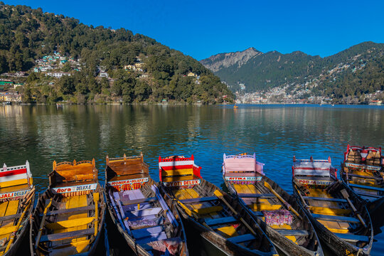
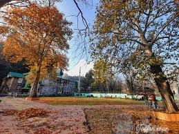
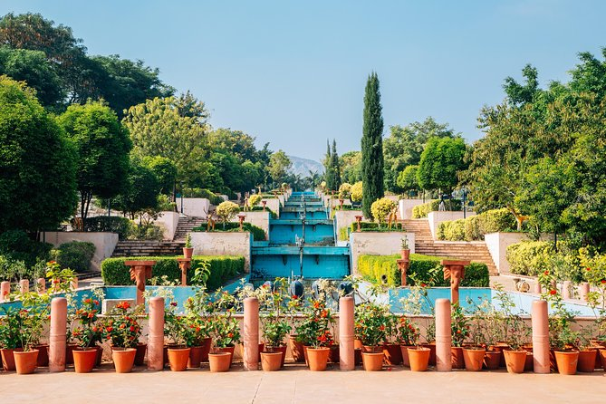
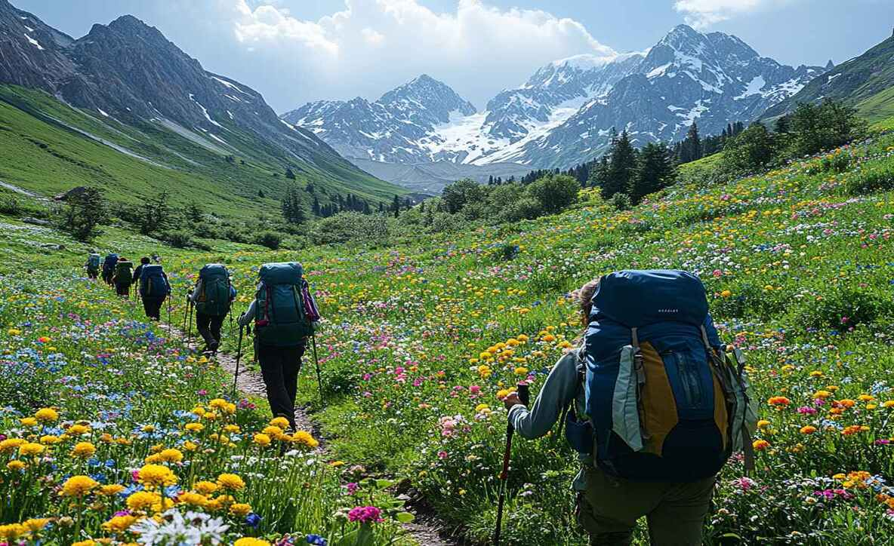

Summer plan
 MUNNAR
MUNNAR
Munnar is a town in the Western Ghats mountain range in India’s Kerala
state. A hill station and former resort for the British Raj elite, it's
surrounded by rolling hills dotted with tea plantations established in the
late 19th century. Eravikulam National Park, a habitat for the endangered mountain
goat Nilgiri tahr, is home to the Lakkam Waterfalls, hiking trails and 2,695m-tall Anamudi Peak.
NAINITAL
Nainital is a Himalayan resort town in the Kumaon region of India’s
Uttarakhand state, at an elevation of roughly 2,000m. Formerly a British hill
station, it’s set around Nainital Lake, a popular boating site with
Naina Devi Hindu Temple on its north shore. A cable car runs to Snow View observation
point (at 2,270m), with vistas over the town and mountains including
Nanda Devi, Uttarakhand’s highest peak.
 KASOL
KASOL
Kasol is one of the best places to visit in the summer in North India. This
tranquil hamlet in the lap of the Himalayan region attracts tourists with its
heavenly beauty. Apart from exploring famous sites and indulging in
adventure sports, you can also taste local cuisine. In this regard, the desserts
from German bakery are very popular.
Winter plan
 MANALI
MANALI
Manali is a high-altitude Himalayan resort town in India’s northern Himachal Pradesh state. It has
a reputation as a backpacking center and honeymoon destination. Set on the Beas River, it’s a gateway
skiing in the Solang Valley and trekking in Parvati Valley. It's also a jumping-off
point for paragliding, rafting and mountaineering in the Pir Panjal mountains,
home to 4,000m-high Rohtang Pass.
 HAMPI
HAMPI
Hampi, located in the Indian state of Karnataka, is a UNESCO World Heritage Site known for its rich historical and architectural significance. Once the glorious capital of the Vijayanagara Empire, Hampi was a thriving city filled with palaces, temples, and bustling markets. Today, it stands as a vast open-air museum, showcasing the remnants of a magnificent civilization. The town is surrounded by rocky hills and boulder-strewn landscapes, adding to its unique charm. Famous landmarks like the Virupaksha Temple, the stone chariot at the Vittala Temple complex, and the Lotus Mahal reflect the grandeur of its past. Hampi attracts tourists, historians, and pilgrims alike, offering a fascinating blend of history, culture, and natural beauty.
 SHIMLA
SHIMLA
Shimla, the capital city of Himachal Pradesh, is a charming hill station nestled in the foothills of the Himalayas. Once the summer capital of British India, Shimla still retains its colonial charm with elegant buildings, historic churches, and the famous Ridge and Mall Road bustling with shops and cafes. Surrounded by dense forests of pine, oak, and deodar, it offers a serene escape with cool weather and scenic beauty throughout the year. In winter, Shimla is blanketed in snow, making it a popular destination for honeymooners and adventure enthusiasts. Attractions like Jakhoo Temple, Kufri, and the toy train ride from Kalka to Shimla add to the city's timeless appeal, making it one of India’s most beloved hill stations.
Autumn plan
 COORG
COORG
Coorg, often called the "Scotland of India," is a lush hill station nestled in Karnataka’s
Western Ghats, renowned for its misty landscapes, sprawling coffee plantations,
and verdant forests. Located amidst imposing mountains, Coorg is one of the most affluent
hill stations in the state, with its rolling green hills, streams cutting
through dense forests, and vast coffee and spice plantations.
KUPWARA
Kupwara is a beautiful district located in the northern part of Jammu and Kashmir, India. Surrounded by lush green forests, snow-covered mountains, and
scenic valleys, Kupwara is often called the "Crown of Kashmir" for its breathtaking natural charm. It shares a border with Pakistan-administered areas and holds
both strategic importance and cultural richness. The region is home to picturesque places like Bangus Valley, Lolab Valley, and Keran, which are known for
their untouched beauty and peaceful environment. Kupwara also has historical and spiritual significance, with many ancient shrines and temples scattered across
the district.
UDAIPUR
Udaipur in Autumn is a great idea because the weather is perfect during this time of year. The scorching heat of summer has subsided, and the monsoon rains have
cleared the air, making it ideal for sightseeing and outdoor activities. The city’s picturesque lakes, historic palaces, and colourful markets are particularly enchanting
in the autumn months, with the bonus of fewer crowds compared to the peak tourist season. Autumn in Udaipur also coincides with many cultural festivals and events,
offering visitors a unique opportunity to experience the local culture and traditions.
spring plan
GULMARG
Gulmarg, meaning "Meadow of Flowers," is a stunning hill station located in the Baramulla district of Jammu and Kashmir, India. Nestled in the Pir Panjal range of the Western Himalayas at an altitude of about 8,690 feet, it is renowned for its breathtaking natural beauty, lush meadows, and snow-capped peaks. In spring and summer, the landscape comes alive with vibrant wildflowers, while in winter, it transforms into a snowy paradise, attracting skiers and snowboarders from around the world. One of Gulmarg's major attractions is the Gulmarg Gondola, one of the highest cable cars in the world, offering panoramic views and access to high-altitude ski slopes. Additionally, Gulmarg is home to one of the highest golf courses globally, making it a year-round destination for nature lovers and adventure seekers alike.
 DARJEELING
DARJEELING
Darjeeling during spring is a breathtaking experience filled with freshness, color, and charm. As winter fades away, the hills of Darjeeling come alive with blooming rhododendrons, magnolias, and cherry blossoms, painting the landscape in vibrant hues. The weather is pleasantly cool and crisp, making it perfect for exploring tea gardens, strolling along the Mall Road, or enjoying a ride on the iconic Darjeeling Himalayan Railway. The view of the snow-capped Kanchenjunga peak is especially clear during this season, offering unforgettable sunrise moments from places like Tiger Hill. Spring also brings a sense of calm and rejuvenation to the region, attracting travelers looking to relax amidst nature, sip fresh Darjeeling tea, and breathe in the clean mountain air.
 THE VALLEY OF FLOWERS
THE VALLEY OF FLOWERS
The Valley of Flowers, located in Uttarakhand's Chamoli district, is a breathtaking natural wonder that comes alive during the spring season. As the snow melts and the weather warms, the valley transforms into a vibrant carpet of blooming wildflowers, creating a spectacle of color that stretches as far as the eye can see. Surrounded by snow-capped peaks and nestled within the Nanda Devi Biosphere Reserve, this UNESCO World Heritage Site is home to over 500 species of alpine flowers, including blue poppies, orchids, and primulas. Spring brings with it a sense of renewal and serenity, making it the perfect time for nature lovers and trekkers to witness the valley in its most colorful and enchanting form. The fresh mountain air, the melody of flowing streams, and the panoramic beauty of the Himalayas make a visit to the Valley of Flowers in spring a truly magical experience.